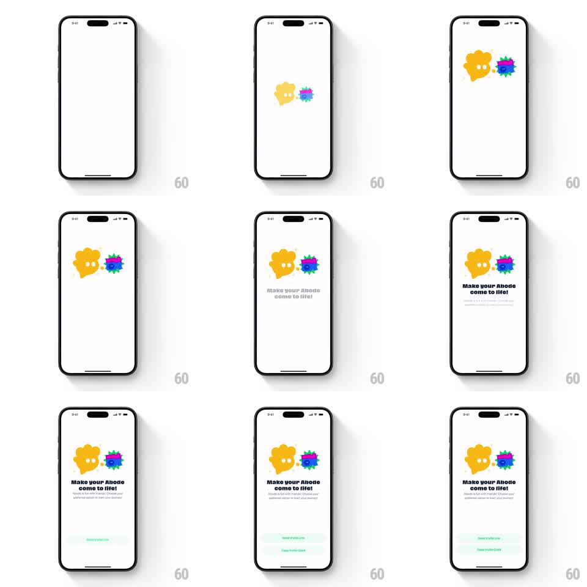

Media
Frame-by-frame

Rebuild this animation 1:1: Abode's invite friends sheet - two blob characters (a big yellow blob and a small spiky purple-pink blob) pop in with springy scale, bounce toward each other, and then the headline "Make your Abode come to life!" with subcopy and two action buttons stagger in below.

Rebuild this animation 1:1: Abode's invite friends sheet - two blob characters (a big yellow blob and a small spiky purple-pink blob) pop in with springy scale, bounce toward each other, and then the headline "Make your Abode come to life!" with subcopy and two action buttons stagger in below. ## Integration Integration: stack-agnostic spec - springs given as stiffness/damping, timed motions as duration + curve; map every value to your framework and animation library of choice. ## Scene White sheet. Center: a large yellow blob character with eyes and a smaller spiky purple blob with a pink ring, side by side. Below: "Make your Abode come to life!" headline, subcopy about sharing an invite link, a green "Send Invite Link" button, and a secondary "Copy Invite Code" button. ## Motion spec Pattern: springy character pop with staggered content reveal. - The yellow blob pops in first (scale 0 -> 1.15 -> 1.0, spring ~300/14, wobble on the blob edges). - The purple blob pops in 150ms later from the right (scale 0 -> 1.2 -> 1.0, spring ~320/16) with a small spin (rotate -15deg -> 0). - The two blobs lean toward each other (translate 8pt inward each, rotate +/-5deg, 300ms ease-out), hold, then settle back with a soft bounce. - Idle: both blobs bob gently (translateY +/-3pt, 2.2s sine, phase-offset) and blink every 3s. - Headline fades up (250ms), then subcopy (200ms), then Send Invite Link button slides up (250ms), then Copy Invite Code fades in (150ms). ## Calibration - The blobs' lean-in is the emotional beat - give it a hold before settling. - Content staggers after the characters land, never during. ## Reduced motion Characters and content fade in together over 300ms; no pops or leaning. ## Don't miss - The purple blob's spiky edge wiggles as it lands (a quick squash on the spikes). - The characters' eyes look at each other during the lean-in.